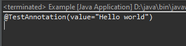
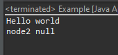
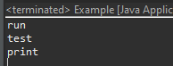

[Java] 32. Reflection機能を使う方法(Annotation編)
こんにちは。明月です。
この投稿はJavaのReflection機能を使う方法(Annotation編)に関する説明です。
以前の投稿でJavaのReflection機能をClassとMethod、Variableを分けて説明しました。
link - [Java] 29. Reflection機能を使う方法(Class編)
link - [Java] 30. Reflection機能を使う方法(Method編)
link - [Java] 31. Reflection機能を使う方法(Variable編)
今まではReflectionがクラスを割り当てするか内部関数、変数の値を取得することで使いました。
JavaではAnnotationは機能が何もないです。AnnotationはJavaでメタデータの役だけです。つまり、Javaのコードの解析記述や説明に関数データです。
でも、AnnotationはJavaのReflectionと一緒で使えば単純なメタデータの機能だけではないです。
import java.lang.annotation.Annotation;
import java.lang.annotation.ElementType;
import java.lang.annotation.Retention;
import java.lang.annotation.RetentionPolicy;
import java.lang.annotation.Target;
// アノテーション生成(クラス用)
// RUNTIME設定してないと実行する時にgetDeclaredAnnotationsで探索ができない。
@Target(ElementType.TYPE)
@Retention(RetentionPolicy.RUNTIME)
@interface TestAnnotation {
// 基本default値
public String value() default "";
}
// アノテーション設定
@TestAnnotation("Hello world")
class Example {
// 実行関数
public static void main(String[] args) {
// Exampleでアノテーション
Annotation[] annos = Example.class.getAnnotations();
// すべてアノテーション出力
for (Annotation anno : annos) {
// コンソール出力
System.out.println(anno.toString());
// TestAnnotationアノテーションなら
if (anno.annotationType() == TestAnnotation.class) {
TestAnnotation a = (TestAnnotation) anno;
// TestAnnotationのvalueの値を出力
System.out.println(a.value());
}
}
}
}

上の例をみれば、Exampleでアノテーションの値を取得して設定されているvalueの値をコンソール出力に出力しました。
ここまでみればアノテーションのReflectionは別に活用度がなさそうです。
import java.lang.annotation.ElementType;
import java.lang.annotation.Retention;
import java.lang.annotation.RetentionPolicy;
import java.lang.annotation.Target;
import java.lang.reflect.Constructor;
import java.lang.reflect.Field;
// アノテーション生成(メンバー変数用)
// RUNTIME設定しなければ実行する時、getDeclaredAnnotationsで探索ができない。
@Target(ElementType.FIELD)
@Retention(RetentionPolicy.RUNTIME)
@interface DependancyInjection {
// 自動生成されるクラスタイプ。基本タイプはObject
public Class<?> value() default Object.class;
}
// クラス
class Node {
// コンストラクタ
public Node() { }
// 関数生成
public void print() {
// コンソール出力
System.out.println("Hello world");
}
}
// 親クラス
class Abstract {
// コンストラクタ
public Abstract() {
try {
// メンバー変数を取得
for (Field field : Example.class.getDeclaredFields()) {
// DependancyInjectionアノテーション取得
DependancyInjection anno = field.getDeclaredAnnotation(DependancyInjection.class);
// あれば？
if (anno != null) {
// アクセス修飾子を無視
field.setAccessible(true);
// value関数値を取得
Class<?> clz = anno.value();
Constructor<?> constructor;
// もしかしてObjectタイプなら
if (clz == Object.class) {
// メンバー変数のタイプを取得する。
clz = field.getType();
}
// インスタンス生成
constructor = clz.getConstructor();
// 値を格納
field.set(this, constructor.newInstance());
}
}
} catch (Throwable e) {
e.printStackTrace();
}
}
}
// 親クラスを継承する。
class Example extends Abstract {
// 依存性注入のアノテーションがあるメンバー変数
@DependancyInjection()
private Node node1;
// 依存性注入のアノテーションがないメンバー変数
private Node node2;
// 出力関数
public void print() {
// node1がnullではなければ
if (this.node1 != null) {
// print関数を呼び出す。
this.node1.print();
} else {
// コンソール出力
System.out.println("node1 null");
}
// node2がnullではなければ
if (this.node2 != null) {
// print関数を呼び出す。
this.node2.print();
} else {
// コンソール出力
System.out.println("node2 null");
}
}
// 実行関数
public static void main(String[] args) {
// Exampleインスタンス生成
Example ex = new Example();
// 関数呼び出す。
ex.print();
}
}

上のソースをみればExampleクラスでメンバー変数を二つを宣言します。そして親抽象クラスのコンストラクタからDependancyInjectionのアノテーションを持っている変数に変数に関してインスタンス生成します。
結果でprint関数を呼び出すとnode1はnullではなく、print関数が呼び出せることを確認できます。
import java.lang.annotation.ElementType;
import java.lang.annotation.Retention;
import java.lang.annotation.RetentionPolicy;
import java.lang.annotation.Target;
import java.lang.reflect.Method;
// アノテーション生成(メンバー変数用)
// RUNTIME設定しなければ実行する時、getDeclaredAnnotationsで探索ができない。
@Target(ElementType.METHOD)
@Retention(RetentionPolicy.RUNTIME)
@interface AutoExecute {
public int value() default 0;
}
// 親クラス
class Abstract {
// コンストラクタ
public Abstract() {
try {
// 関数を取得
for (Method method : Example.class.getDeclaredMethods()) {
// AutoExecuteのアノテーション取得
AutoExecute anno = method.getDeclaredAnnotation(AutoExecute.class);
// あれば？
if (anno != null) {
// アクセス修飾子を無視
method.setAccessible(true);
// 関数を実行
method.invoke(this);
}
}
} catch (Throwable e) {
// エラーをコンソール出力
e.printStackTrace();
}
}
}
// 親クラスを継承する。
class Example extends Abstract {
// 自動実行するアノテーション設定
@AutoExecute
// 関数設定
public void print() {
// コンソール出力
System.out.println("print");
}
// 自動実行するアノテーション設定
@AutoExecute
// 関数設定
public void run() {
// コンソール出力
System.out.println("run");
}
// 自動実行するアノテーション設定
@AutoExecute
// 関数設定
public void test() {
// コンソール出力
System.out.println("test");
}
// 関数設定
public void close() {
// コンソール出力
System.out.println("close");
}
// 実行関数
public static void main(String[] args) {
new Example();
}
}

上の関数はコンストラクタからAutoExecuteアノテーションを持っている関数を探して実行する関数です。
print関数とrun、testはアノテーションが設定されているので実行されることを確認できます。
元にアノテーションはメタデータの機能だけありますが、Reflectionと一緒に使えば依存性注入や実行パターンを設定する(戦略パターン、Facadeパターン)などの様々なパターンを設定することができます。
ここまでJavaのReflection機能を使う方法(Annotation編)に関する説明でした。
ご不明なところや間違いところがあればコメントしてください。
- [Java] 39. Spring Web Frameworkを利用してウェブサービスプロジェクトを作成する方法2019/10/02 21:00:22
- [Java] 38. Javaでウェブサービスプロジェクト(JSP Servlet)を作成する方法2019/10/01 21:48:08
- [Java] 37.イクリプス(eclipse)でトムキャット(tomcat)を設定する方法2019/09/30 22:19:34
- [Java] 36.コーディングする時、よく使うコーディングパターンとステップ数を減らす方法2019/09/27 20:39:09
- [Java] 35. コーディング規約設定(Google Standard coding style)2019/09/26 21:31:25
- [Java] 34. WindowでMariaDBをインストールする方法2019/09/25 19:58:30
- [Java] 33. オープンライブラリを参照する方法(eclipseからmavenを連結)2019/09/24 19:35:54
- [Java] 32. Reflection機能を使う方法(Annotation編)2019/09/24 00:19:25
- [Java] 31. Reflection機能を使う方法(Variable編)2019/09/20 22:34:40
- [Java] 30. Reflection機能を使う方法(Method編)2019/09/19 20:20:10
- [Java] 29. Reflection機能を使う方法(Class編)2019/09/18 20:02:14
- [Java] 28. 文字タイプ(CharacterSet)とエンディアン(endian)で変換する方法2019/09/17 20:22:02
- [Java] 27. ネットワーク通信(Socket)をする方法2019/09/16 23:42:46
- [Java] 26. ファイル(IO)を扱う方法(ファイル作成、ファイル修正、アクセス日付変更とIOをclose(リソース返却)する理由、Closableインタフェース)2019/09/13 20:03:58
- [Java] 25. Objectクラス(notify、waitの使い方)2019/09/13 00:58:31
- [C#] 48. IEnumerableとIEnumerator、そしてyieldキーワード2021/10/11 19:49:33
- [C#] 47. Nugetを使い方(外部ライブラリ)とデータベース(MariaDB(Mysql))を使い方、そしてトランザクション(Transaction)2021/10/08 18:58:57
- [Window] MariaDBをインストールする方法2021/10/08 18:56:05
- [C#] 46. データベース(MSSQL)に接続する方法2021/10/07 18:39:58
- [C#] 45. ネットワークソケット通信(Socket)を使い方2021/10/06 19:06:25
- [C#] 44. ファイル(FileInfo)とディレクトリ(DirectoryInfo)を扱い2021/10/05 19:29:34
- [C#] 43. ストリーム(Stream)とバイナリ(byte[])、エンコード(Encoding)、そしてusingを使い方とIDisposableインターフェース2021/10/04 18:33:04
- [C#] 42. ファイルを扱い(IO)とファイルメタデータ(FileInfo)を使い方2021/10/01 20:10:21
- [C#] 41. Taskクラスとasync、awaitを使い方2021/10/01 18:59:14
- [Javascript ] WebのFull calendar(スケジュールカレンダー)の使い方法2021/07/15 21:35:36
- [Java] 56. Web serviceのサーブレット(Servlet)で初期化作業(properties設定)2021/07/02 17:10:36
- [Java] 55. Spring frameworkに文字化けを解決する方法(Encoding設定)2021/06/30 16:37:16
- [Java] 54. Spring frameworkでWeb filterを使う方法2021/06/29 18:25:12
- [Java] 53. ウェブサービス(Web service)でエラーページを処理する方法2021/06/25 13:35:54
- [Design pattern] 1-3. ファクトリメソッドパターン(Factory method pattern)2021/06/23 19:45:37